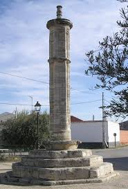
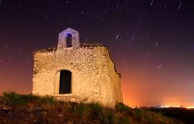

En un lugar de la Mancha.....Lillo (Toledo)
Monumentos
Iglesia parroquial de San Martín Obispo
La Iglesia parroquial de San Martín Obispo es de estilo principalmente gótico-románico de la segunda mitad del siglo XV. Está situada en la plaza de España, en el centro del casco antiguo. Es un monumento que fue declarado Bien de Interés Cultural el 26 de noviembre de 1991. Es una iglesia de tres naves dividida en cinco tramos, mas uno un poco más corto que corresponde al coro, separadas por pilares, con bóveda de crucería, altar pentagonal y una torre-campanario de base cuadrada. Consta de múltiples detalles y adiciones arquitectónicas, como blasones, un coro plateresco. Su fábrica es de sillería al interior ymampostería al exterior, a excepción de algunas capillas añadidas con diferentes estilos. Fue reformada en 1609, en 1834, en 1877, en 1982 y entre 1991 y 1993. Durante el año 2011 ha sido realizada una reforma consistente en el pintado del interior del templo, así como en el saneamiento de partes del techo que se encontraban deteriorados.
Estilo: Gótico Tardío | Época: XV | Bien de interés cultural

Convento franciscano de San Pedro bautista
El convento fue inaugurado oficialmente el 26 de julio de 1644, tras la llegada a la villa de los primeros frailes franciscanos en 1611.Ha sido sede del partido judicial, Juzgado de Primera Instancia, Sala de Audiencia, oficinas y cárcel hasta 1966. Tras su reforma, sirvió de Casa de Cultura y actualmente cuenta con una hospedería.
Rollo de justicia
Impresionante mole de piedra de más de 6 metros de altura. Asentado sobre seis gradas de piedra caliza del siglo XVI, formado por un fuste estriado dividido en dos partes por una moldura saliente. El capitel es renacentista y sobre él un remate de una pequeña columnilla central.
Estilo: Transición gótico-renaciente | Época: XVI

Ermita de la Esperanza
Ermita del siglo XVI. Según la inscripción del dintel de su puerta principal, fue construida en el año 1755. Su forma es rectangular de una nave con arco triunfal de ladrillo barnizado y de igual manera las jambas. El paño del altar con una hornacina de medio punto, una puerta a cada lado da paso a la sacristía. La nave separada por dos escalones de la capilla Mayor, posee una potente cornisa que da paso a una cubrición con un amplio bocel y cielo raso decorado con motivos encillos. Portada con jambas y dintel de una pieza de piedra, sobre cuatro gradas mixtilíneas bajo un porche a tres aguas soportado por columnas de tipo toscano. Fabrica de mampostería con sillares bien labrados en las esquinas. Encalada. Cubrición general a cuatro aguas.
Fue reformada con una ampliación y modificación de su distribución en los años 1990. En 2008 se realizaron obras de acondicionamiento de área de esparcimiento en el entorno de la ermita, con adecuación del terreno, instalación de vallado de madera, instalación mobiliario y cartelería y zona de juegos infantiles.
Estilo: Popular | Época: XVI
Ermita de San Antón
Reedificada en 1855, según una inscripción a la entrada de la capilla mayor, está ubicada en la cima del cerro San Antón.
Estilo: Transición gótico-renaciente | Época: XVI
Estilo: Popular | Época: XIX
